Mes clients
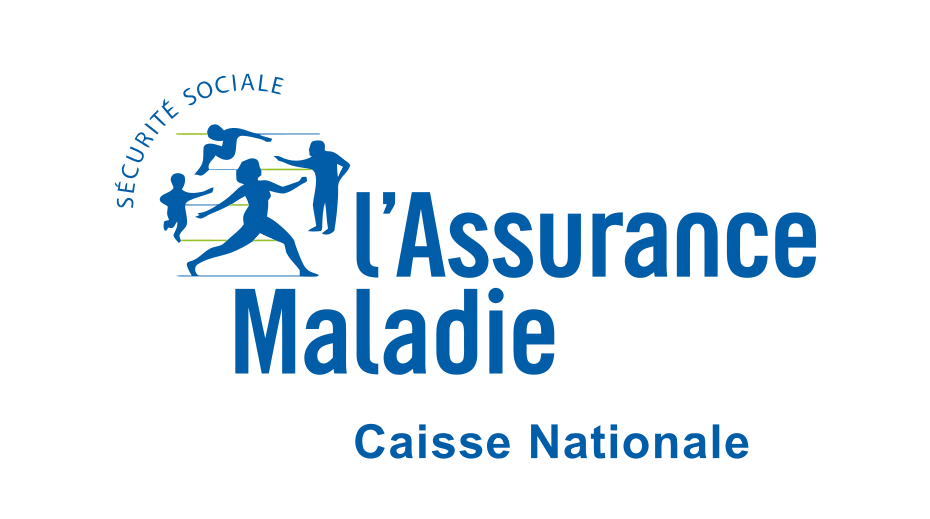
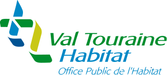
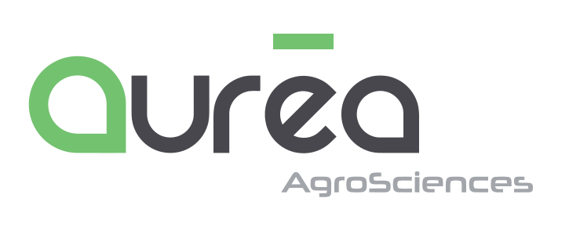
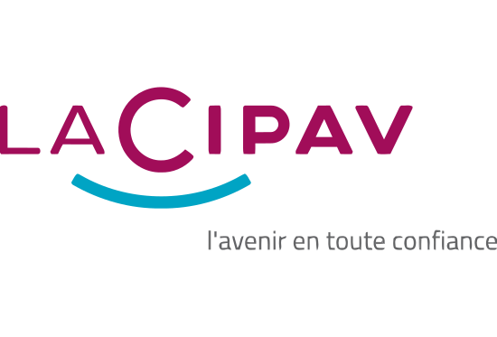
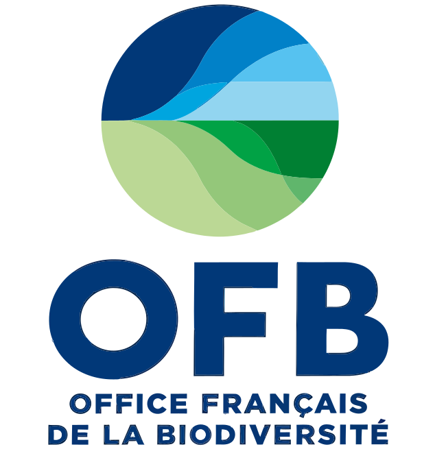
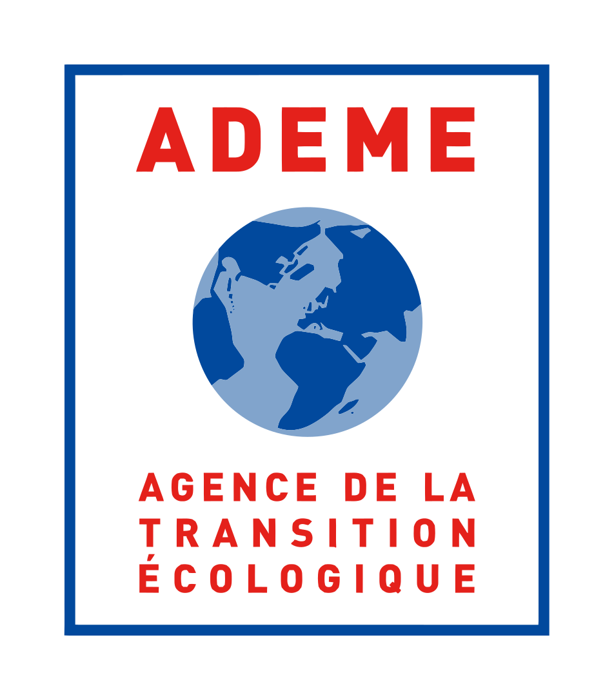
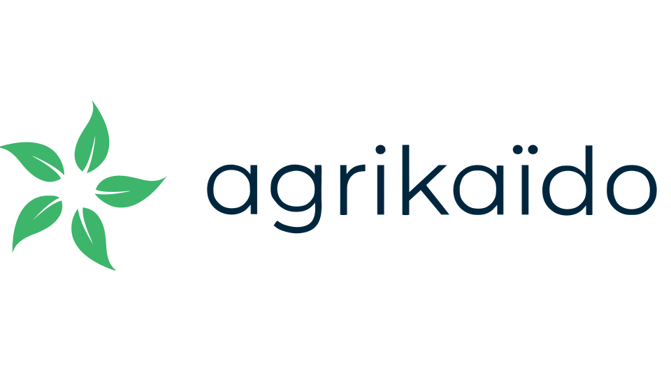
CNAM - Indemnités Journalières (DSIJ)
2021-2024
TMA & MCO sur le système de déclaration de salaire pour le versement des
indemnités journalières.
Modernisation et optimisation des traitements batch critiques.
Module Spring Batch pour statistiques DSIJ (2024)
- Chiffrage du besoin (Poker Planning)
- Conception et initialisation du projet
- Développement des fonctionnalités
- Mise en place de tests unitaires
- Rédaction de documentation
- Déploiement sur environnement client
- Accompagnement des juniors/alternants
- Revues de code
Évolutions d'un traitement Batch pour interopérabilité (2023)
- Développement des évolutions
- Adaptation du traitement au nouveaux flux transmis
- Tests de non régression
Évolutions d'un traitement Shell (2023)
- Ajout des nouvelles règles de gestion
- Optimisation des règles existantes
- Optimisation des requêtes SQL d'extraction
- Tests unitaires
Optimisation d'un Batch à forte volumétrie (2023)
- Réécriture du workflow Spring Batch
- Amélioration de la gestion du cache H2
- Optimisation des requêtes SQL
- Création de tasklet de nettoyage
Migration du protocole d'échange de données sensibles (2023)
- Harmonisation du lancement des traitements
- Refactoring de la gestion des erreurs
- Migration des dépendances
- Adaptation des propriétés de configuration
- Mise en place d'un nouveau serveur
- Tests de bout en bout
TMA & MCO de modules Java Batch & IHM existants (2021-2022 puis
2023-2024)
- Correction de retours de fiches en anomalie
- Migration de socle technique
- Upgrade de la version Java
- Mise à jour des librairies
- Mise en conformité SONAR
- Performance et sécurité applicative
- Développement d'évolutions fonctionnelles
- Déploiement sur environnement client
- Revues de code
Module Batch pour les temps partiel thérapeutique (2021)
- Chiffrage du besoin (Poker Planning)
- Conception et initialisation du projet
- Développement des fonctionnalités
- Mise en place de tests unitaires
- Rédaction de documentation
- Correctifs des retours de recette
- Mise en place de règles SONAR
- Déploiement sur environnement client
Java
Spring Boot
Spring Batch
H2
Oracle
PL/SQL
Shell
JUnit
GitLab CI/CD
Jenkins
CNAM - Gestion des Flux Tiers
2024
Évolution et sécurisation du système de gestion des rejets et signalements, avec focus
sur la
protection des données sensibles.
Migration FTP vers SFTP (2024)
- Chiffrage du besoin
- Ajout et implémentation des nouvelles dépendances SFTP
- Refactoring et découplage des modules
- Développement des évolutions
- Rédaction de documentation
- Déploiement sur environnement client
Gestion des Tiers (2024)
- Chiffrage du besoin
- Développement des nouvelles fonctionnalités
- Mise en place des règles SONAR
- Documentation technique
Java
Spring Batch
PostgreSQL
Oracle
PL/SQL
Shell
CNAM - Bordereau de Paiement (BPIJ)
2021-2024
Support et évolution du système de génération des bordereaux de paiement, avec focus
sur la traçabilité et la performance.
Support MCO Production (2023-2024)
- Accompagnement développeur
- Analyse et diagnostic de fiches en anomalie
- Résolution d'incidents de production
- Documentation des solutions
Amélioration Traçabilité - Statistiques BPIJ (2023)
- Mise en place système de log
- Création requêtes d'extraction
- Mise en place d'un compteurs BPIJ au niveau de l'API RESTful
- Déploiement et monitoring
Évolutions applicatives de la lecture des IJ (2021)
- Développement des évolutions
- Déploiement sur environnement client
Java
API RESTful
Spring Boot
Spring Batch
Oracle
PL/SQL
Shell
CNAM - Déclaration d'Accident du Travail (DAT) - TMA
2023
Migration technique d'un ensemble de modules traitant les déclarations d'accident du
travail (DAT).
Migration Technique (2023)
- Migration de socle technique (upgrade de version Java)
- Mise à jour des librairies et dépendances du projet
- Mise en conformité avec SONAR
- Optimisation des performances et de la sécurité applicative
Java
Mise à jour dépendances
Sécurité
Performance
SONAR
CNAM - Outil de Gestion de la Relation avec le Public (MEDIALOG+)
- TMA
2020
Mise en place de nouvelles règles de gestion au niveau des interfaces et des API
RESTful Java Spring.
Développement et maintenance (2020)
- Développement des nouvelles fonctionnalités
- Correction de bugs
- Revues de code
Java
Spring
API RESTful
Correction de bugs
Revues de code
Majaliss - Tech Lead
2024
Responsable de la conception, du suivi, et du développement d'une application web,
tout en accompagnant et encadrant une équipe de développeurs.
Tâches et Responsabilités
- Conception d'une application web avec Next.js, Nest.js, MySQL
- Conception de l'architecture, conception BDD, conception API
- Accompagnement, suivi, et staffing des développeurs
- Rédaction de documentations techniques
- Revues de code
- Agilité : Kanban, weekly, poker planning, spring reviews
- Onboarding des nouvelles recrues
Next.js
Nest.js
MySQL
AWS
Architecture
Kanban
Documentation Technique
Onboarding
Val Touraine Habitat - Développeur/Intégrateur Applicatif
2022-2023
Développement de modules internes, intégration, et support de niveau 2 pour le compte
de Val Touraine Habitat.
Développement et maintenance (2022-2023)
- Remise en marche de traitements SQR et d'interfaces de comptabilité/budget
- Création d'un module interne de gestion de recouvrement des locataires partis
- Développement d'une application React de gestion des congés
- Création et maintenance de traitements Shell
Intégration, Support et maintenance de l'ERP (2022)
- Monitoring de la production
- Support aux utilisateurs
- Planification des mises à jour de l'ERP
- Purge des répertoires
- Automatisation des traitements
- Mise à jour de traitements historiques
SQR
PL/SQL
PHP
Oracle Form Builder
ERP
Support Niveau 2
Auréa Agrosciences - Auditeur
2022
Audit de la gestion des sources d'une application de gestion Windev pour le compte
d'Auréa Agrosciences.
Audit de la gestion des sources
- Définition des objectifs
- Définition de la portée de l'audit
- Prise de contact avec le client
- Collecte d'informations préliminaires
- Analyse de l'existant
- Compilation des données analysées
- Rédaction du rapport d'audit
- Présentation des recommandations
Windev
Audit
Gestion des sources
Analyse
Rapport d'audit
Préconisations
Nabawi - Tech Lead
2021 - 2022
Responsable de la conception, du développement et du déploiement d'une application
mobile avec React Native.
Tâches et Responsabilités
- Conception, développement et déploiement d'une application mobile React Native
- Découpage des fonctionnalités, ateliers de conception (PO & UI/UX)
- Développement des fonctionnalités front & back
- Déploiement sur environnement Linux, PlayStore/Apple Store
React Native
Expo
Frontend
Backend
Linux
AWS
PlayStore
Apple Store
UI/UX
La CIPAV - Traitement des opérations de suivi de carrières des
adhérents (TOSCA) - UI/UX
2020
Participation à la conception UI/UX de la plateforme TOSCA de la CIPAV.
Création de maquettes à destination de la MOE
- Ateliers de conception
- Définition des composants et vectorisation
- Création des wireframes et maquettes
- Préconisations en matière d'expérience utilisateur et accessibilité
- Suggestions d'amélioration du workflow utilisateur
- Proposition proactive d'interfaces
Figma
Jira
Ateliers
Wireframes
Composants
Atomic design
Accessibilité
UI/UX
Office Français de la Biodiversité - Développeur Front
2019
Développement d'une application web visant à promouvoir et soutenir l'agriculture
locale en France.
Création d'une Application Web (2019)
- Initialisation et configuration du projet
- Intégration des maquettes
- Gestion du responsive design
- Préconisations en matière d'accessibilité
- Livraison
HTML
CSS
JavaScript
Sass
Bootstrap
JQuery
Git
ADEME - Agir pour la transition écologique - UI/UX - Testeur
2019
Création de maquettes et d'un guide de style à destination de la MOE, ainsi que des
tests fonctionnels pour l'application.
UI/UX Design
- Création de maquettes pour les différents parcours utilisateurs via Adobe XD &
HTML/CSS/JS
- Création d'un guide de style en HTML/CSS/JS
Tests Fonctionnels
- Rédaction des plans de tests
- Déroulement des campagnes de test
- Génération de rapports de test via Squash
- Création de tickets JIRA
HTML
CSS
JavaScript
Adobe XD
Squash
JIRA
Wireframes
Composants
Atomic design
Accessibilité
UI/UX
Agrikaïdo - L'assistant numérique du potager durable - Développeur
front-end
2019
Développement d'une application web mobile first visant à faciliter la gestion des potagers.
Développeur front-end
- Développement des nouvelles fonctionnalités
- Refactoring des composants
- Correction de bugs
- Déploiement sur environnement Linux
- Revues de code
HTML
CSS
JavaScript
React
Linux
Might Studio - Maintenance d'un serveur d'application en temps
réel C++ - Développeur back-end
2013-2016
Développement et maintenance d'une application de serveur de jeu pour le compte de
Might Studio.
Développeur back-end
- Développement de contenus et systèmes pour les joueurs
- Correction de bugs
- Déploiement sur environnement Linux
C
C++
CMake
MySQL
GCC
GDB


 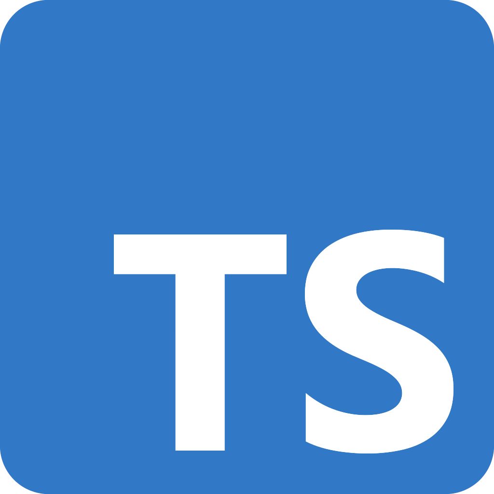
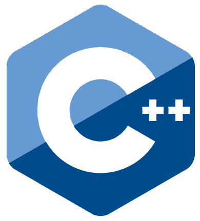
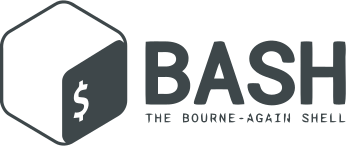
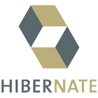
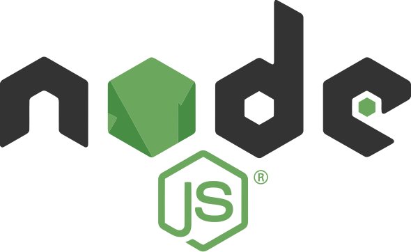
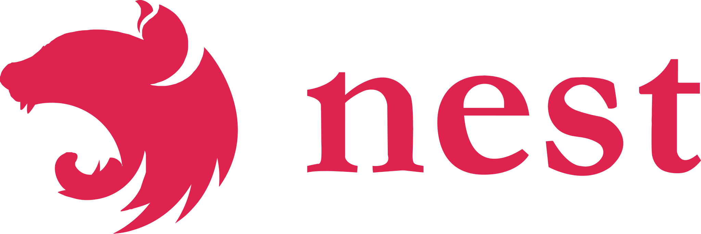
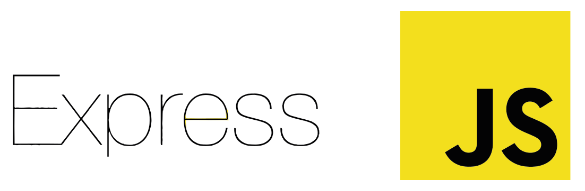
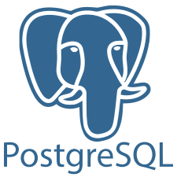
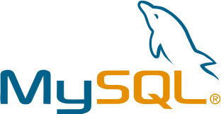
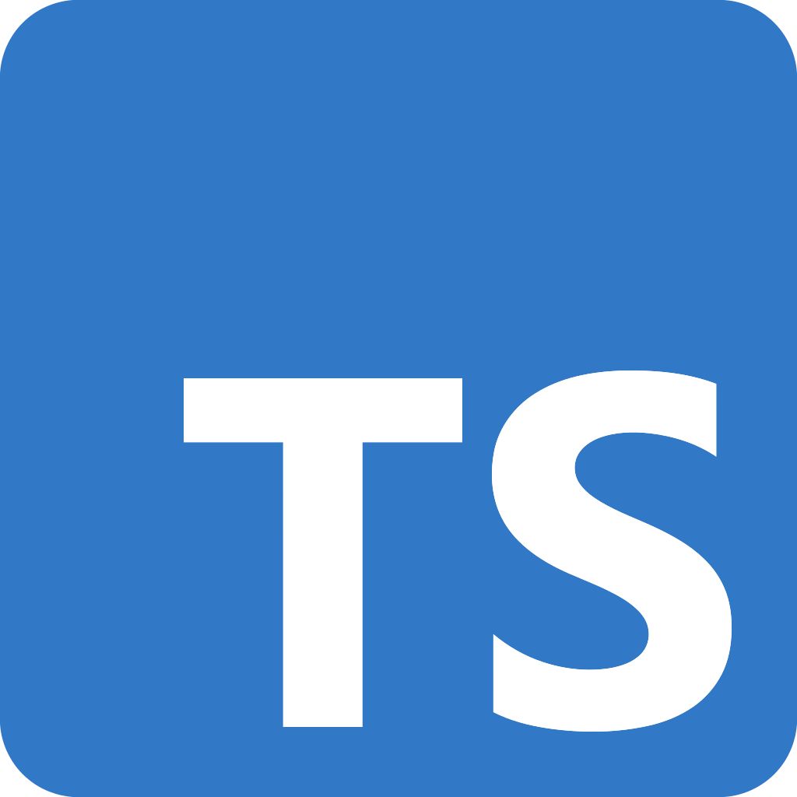
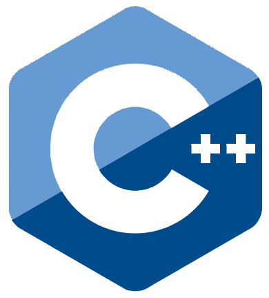
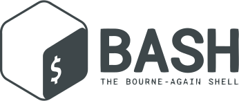
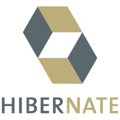
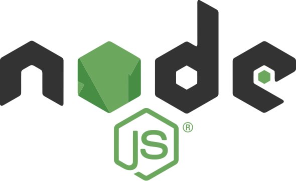
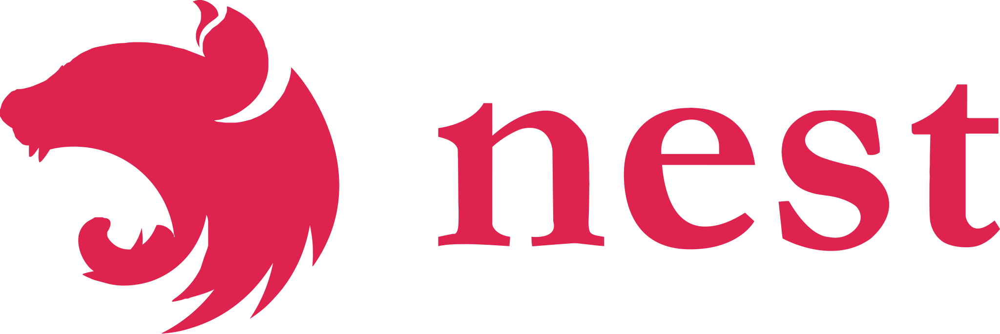
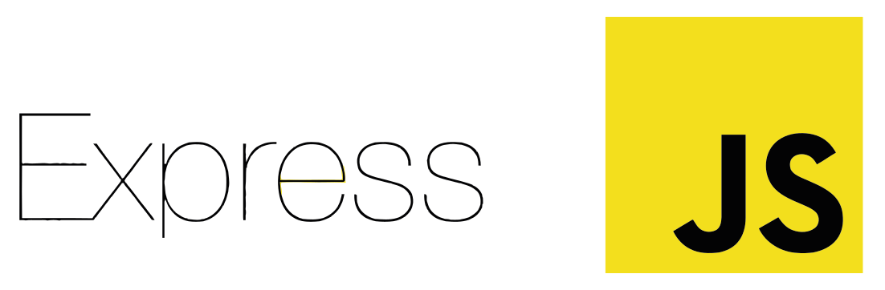
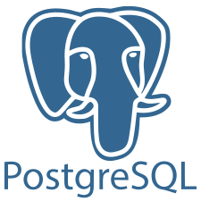
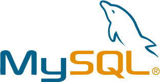

 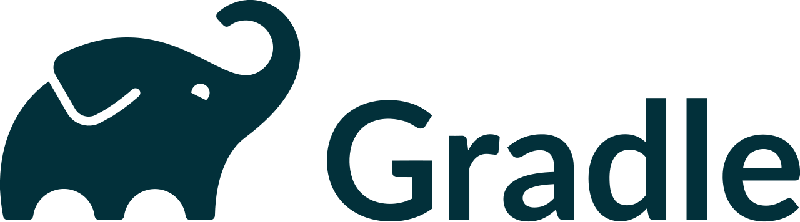
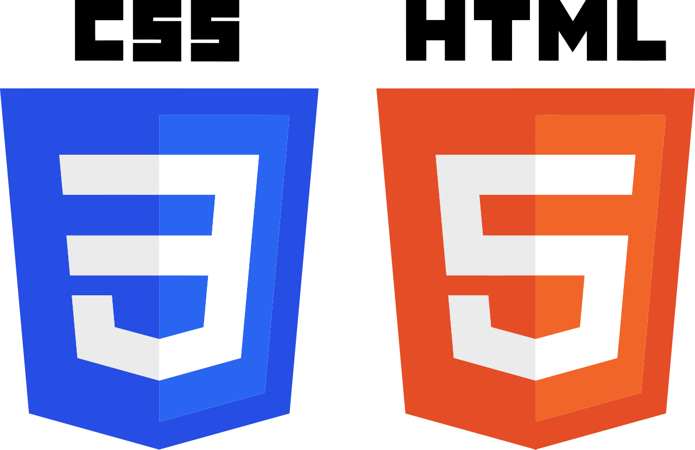
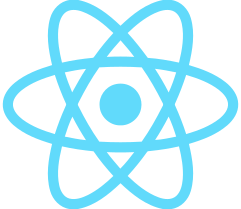
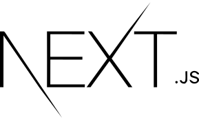
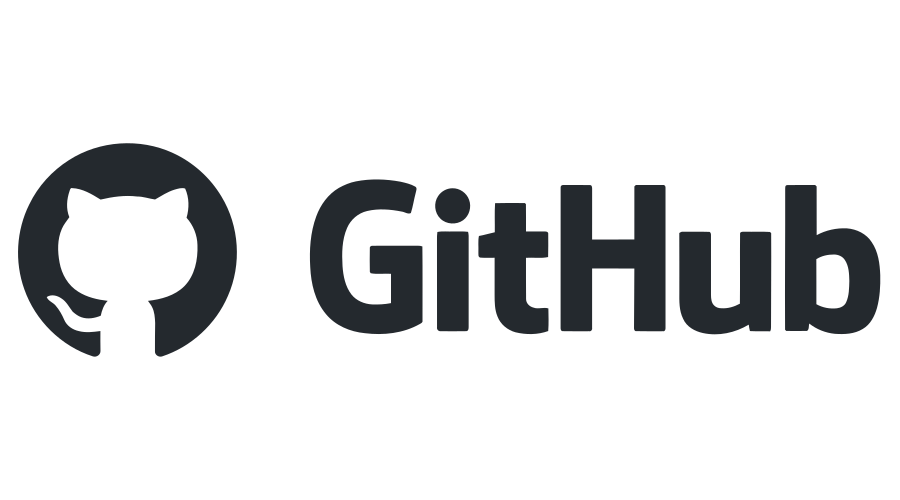
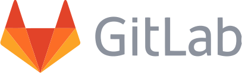
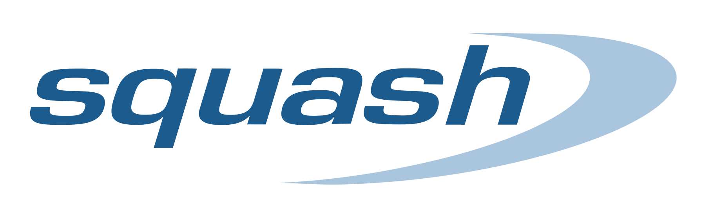
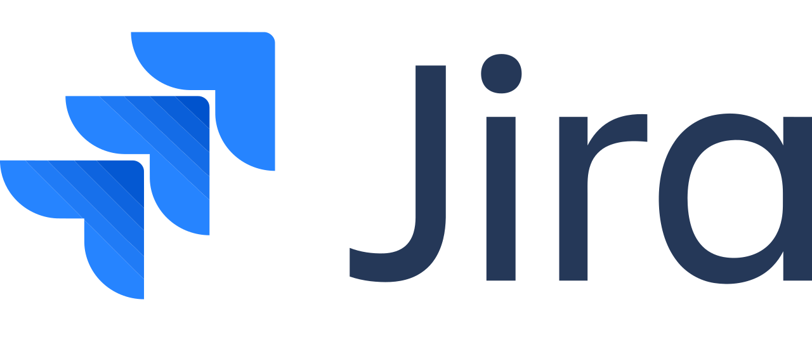
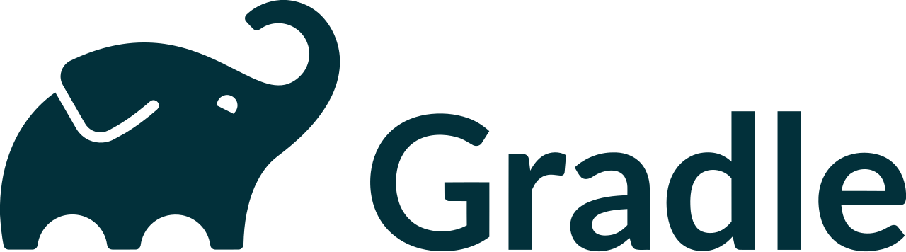
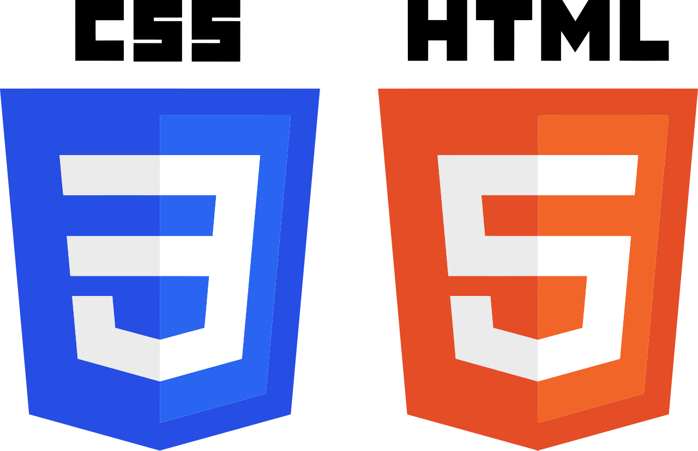
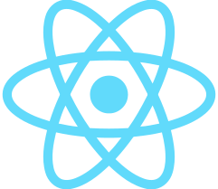
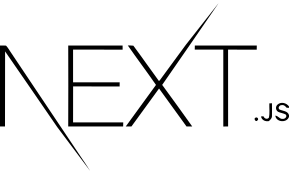
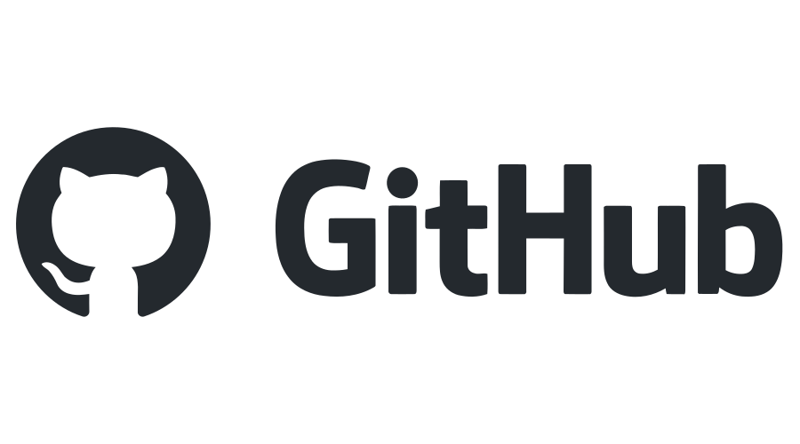
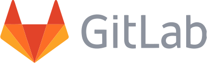
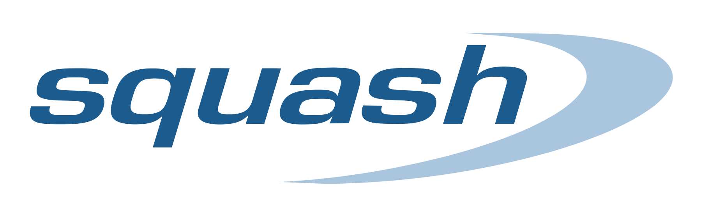
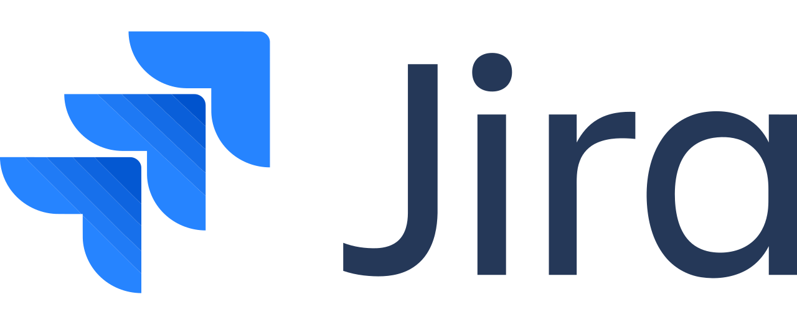